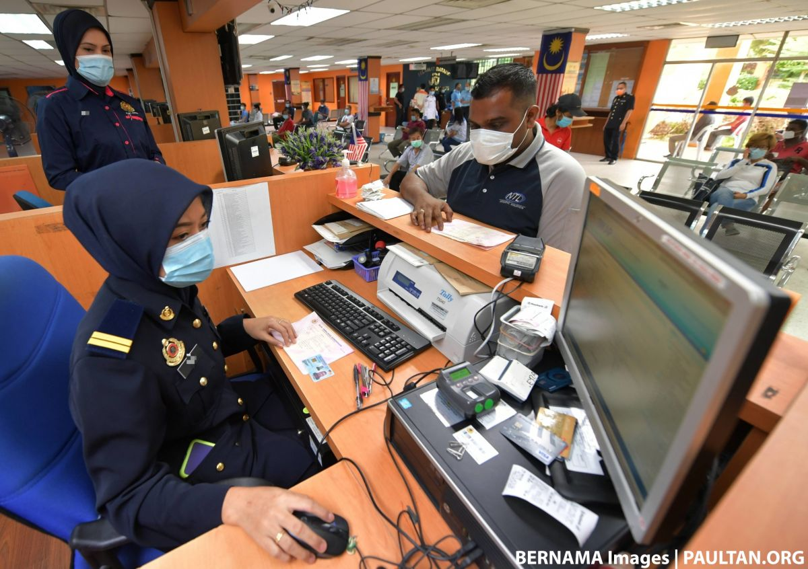
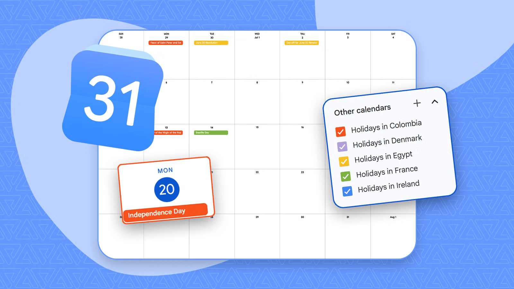

01 / Five connected areas
One platform, many settings.
The same tools adapt to different goals, from teaching a class to coordinating public services.
Learning that travels
Teachers can publish resources in Classroom, run remote lessons in Meet, and give feedback in Docs. Example: a group researches a topic in shared Slides and presents it live.
Projects with momentum
Teams use Gemini to organize their work, Meet to make decisions, Sheets to track progress, and Drive to keep approved files together. This supports hybrid and distributed teams.
Coordinated care teams
Administrative teams can use shared calendars, controlled documents, and video meetings to coordinate training, rosters, and internal projects. Sensitive information still needs approved systems and policies.

Services and records
Departments can collaborate on policy drafts, consultations, budgets, and public information workflows. Access controls and retention rules help protect official records.

Small moments, organized
Individuals can plan events in Calendar, share photos or documents in Drive, write a household list in Keep, and use Meet to stay connected with family or community groups.
02 / Choosing responsibly
The tool should fit the need.
Workspace is powerful when collaboration and accessibility are the priority. Organizations should also consider privacy, accessibility, data classification, offline needs, and whether a regulated workflow requires a specialized system.